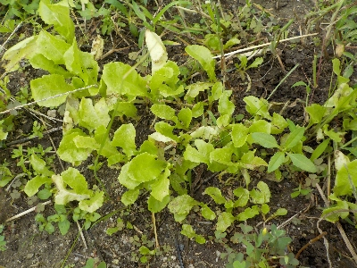
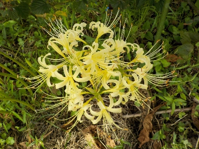

レタスの仲間の苗が育ってます。
2025/09/20

たぶんサンチュじゃないかな。自信はないです。
以前にタネを収穫したんですが、タネを蒔かなくてもこぼれたタネから沢山の苗が育ってました。
これを植え替えて育てようと思ってます。なので種蒔きはやらない。
2025/09/20

たぶんサンチュじゃないかな。自信はないです。
以前にタネを収穫したんですが、タネを蒔かなくてもこぼれたタネから沢山の苗が育ってました。
これを植え替えて育てようと思ってます。なので種蒔きはやらない。
2025/09/20

彼岸前に白い彼岸花が咲きました。
今年も暑いので時期がずれるかと思ったんですけど、そんなに変わらないですね。毎年猛暑だからいつも一緒かも。
過去の日記
台風の季節です。